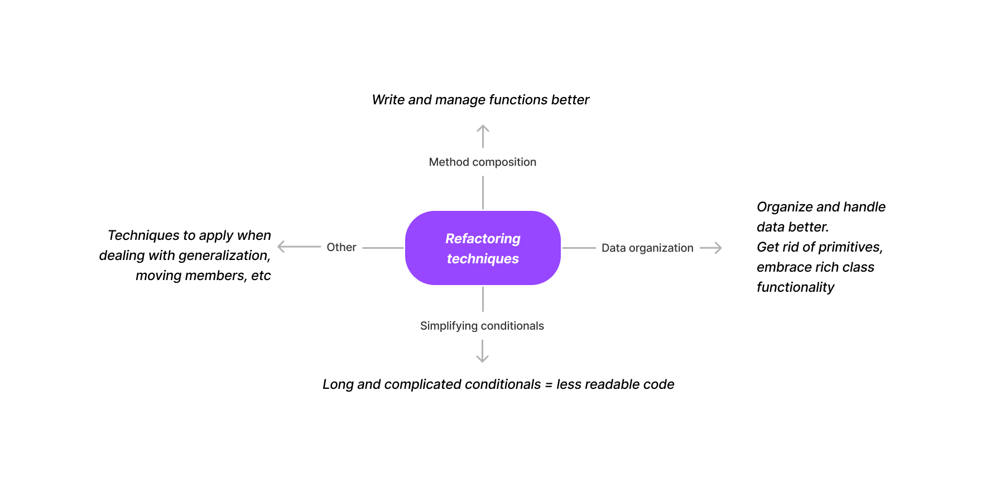
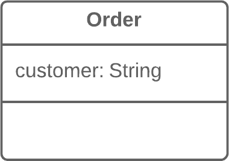
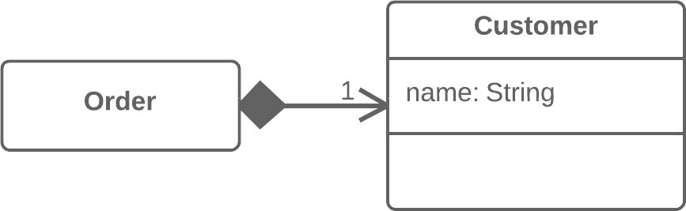

Refactoring and Clean Code
Everything I Learned
What is refactoring?
Refactoring is a process of improving the readability, modifiability and ease of debug of existing code. It is not about adding new functionality. Refactoring transforms a mess into clean code and simple design.
Here are some of the basic categories of refactoring techniques:

Quick summary of each category
Method composition:
Much of refactoring is dedicated to how we write methods. In most cases, “excessively long functions are the root of evil”. All techniques in this category aim to streamline methods, improve readability, remove duplication, and increase ease of future modifications.
Favorite techniques:
- Extract method
- The more lines found in a method, the harder it’s to figure out what the method does. This is the main reason for this refactoring.
- Besides eliminating rough edges in your code, extracting methods is also a step in more readable code. It reduces duplication and isolates parts of the code for easier debugging.
1def printOwing(self):
2 self.printBanner()
3
4 # print details
5 print("name:", self.name)
6 print("amount:", self.getOutstanding())
1def printOwing(self):
2 self.printBanner()
3 self.printDetails(self.getOutstanding())
4
5def printDetails(self, outstanding):
6 print("name:", self.name)
7 print("amount:", outstanding)
Data organization
All of code is about data and the operations you perform on it. It is possible to write functional code without thinking too hard about the data you are handling. The techniques in this category help with “replacing primitive data types with rich class functionality”. Pieces of data that should be looked at together become members of a class rather than independent primitives. Proper data organization and method composition alone can bring major improvements in your code.
Favorite techniques:
- Replace Data Value with Object
- With replacement of a data value with an object, we have a primitive field (number, string, etc.) that’s no longer so simple due to growth of the program and now has associated data and behaviors. On the one hand, there’s nothing scary about these fields in and of themselves. However, this fields-and-behaviors family can be present in several classes simultaneously, creating duplicate code.
- Therefore, for all this we create a new class and move both the field and the related data and behaviors to it.


Simplifying conditionals
Conditionals have a tendency to get more complicated over time. In my experience, trying to untangle a conditional can be a frustrating experience. The techniques in this category help you write conditionals that are easier to follow, more expressive and robust.
Favorite techniques:
- Replace Nested Conditional with Guard Clauses
- When you have a group of nested conditionals and it’s hard to determine the normal flow of code execution, this refactoring comes in handy.
- We isolate all the special checks and edge cases into separate clauses and place them before the main checks.
1public double GetPayAmount()
2{
3 double result;
4
5 if (isDead)
6 {
7 result = DeadAmount();
8 }
9 else
10 {
11 if (isSeparated)
12 {
13 result = SeparatedAmount();
14 }
15 else
16 {
17 if (isRetired)
18 {
19 result = RetiredAmount();
20 }
21 else
22 {
23 result = NormalPayAmount();
24 }
25 }
26 }
27
28 return result;
29}
1public double GetPayAmount()
2{
3 if (isDead)
4 {
5 return DeadAmount();
6 }
7 if (isSeparated)
8 {
9 return SeparatedAmount();
10 }
11 if (isRetired)
12 {
13 return RetiredAmount();
14 }
15 return NormalPayAmount();
16}
- Introduce Assertion
- In the case where certain conditions must be true for a portion of code to work correctly, this refactoring technique comes in handy. We replace all our assumptions with specific assertion checks.
1def getExpenseLimit(self):
2 # Should have either expense limit or
3 # a primary project.
4 return self.expenseLimit if self.expenseLimit != NULL_EXPENSE else \
5 self.primaryProject.getMemberExpenseLimit()
1def getExpenseLimit(self):
2 assert (self.expenseLimit != NULL_EXPENSE) or (self.primaryProject is not None)
3
4 return self.expenseLimit if (self.expenseLimit != NULL_EXPENSE) else \
5 self.primaryProject.getMemberExpenseLimit()
My experience
I want to talk about my experience from 3 different angles. How my behavior changed, how I look at coding differently now, and the best practices I’m taking forward with myself.
- How my behavior changed
- Almost everything I learned made me respect OOP concepts more.
- I started using multiple files more, I used classes, data structures and functions more intentionally and “really thought about what code should look” like before jumping into the mechanical side of coding.
- Once code was refactored, it reduces the cognitive effort required from a future reader/owner. This made me a lot more productive - I was spending much less time and mental effort trying to figure out what code was doing. It was all in front of me.
- How I look at coding differently now
- Coding became fun again.
- Over time, I have learnt that I enjoy making things. Podcasts, music, blog posts, or new features. I enjoy making high-quality things even more. I could feel a tangible improvement in my code quality and code health. I enjoyed looking at and writing new code once I refactored it or wrote it more intentionally.
- “Thinking, planning and implementing code at the same time is a great feeling.” As I started writing more and more code, my process evolved. My current process is to think about what I’m coding using quick drawings on my whiteboard, then type out some pseudocode, and finally move pieces of the pseudocode around and write syntactically correct and complete code. The whole process leaves me more energized - I always feel like I’m in control. Bugs are caught quickly and easily. Harsh boundaries between different modules and methods take out any frustrations I would have felt from working with spaghetti code.
- I have realized that writing code is an art and is about style. For example, consider the trade-off you need to make when writing function calls upon function calls. More functions and boundaries lead to more expressive code (which is good!) but might cause the reader to jump around different parts of a file in order to get to a particular function definition (which is not good). Performance aside, I will always prefer to write more functions in order to write more expressive code. I trust that readers and modern IDEs will make code navigation easy. That is my style. Someone else might write less functions, which makes the end result less expressive but slightly easier to navigate. That would be their style. Writing code is about style.
- Best practices
- Code can keep improving, settle for good enough
- Your code can almost always be improved. Settle for ‘good enough’ and move on.
- You need to move to other things, and constantly cleaning up old code is not an option. Once you think a piece of code is expressive, easily modifiable, understandable, and will be easy to debug in the future, move on. This brings me to my next best practice…
- Keep a wishlist
- I keep coming across code that frustrates me. I keep a track of such code and return to it when I have some downtime or I feel like cleaning up code.
- For best results, know your editor well.
- The quicker you are able to implement the changes you want, the quicker you can move. You do not want the tool to become a source of friction between you and clean code.
- There are 2 golden rules to keep writing clean code without getting lost in the details:
- The broken windows rule
- Don’t leave any ‘broken windows’ in your code. Broken windows are messy pieces in an otherwise clean file. If someone (you included) looks at a ‘broken window’ in code, you’re more likely to feel okay with making a further mess.
- On the other hand, if you see a well formatted, well written file, you simply do not want to be the one who adds the first bit of mess into the clean file. Don’t leave broken windows in your code, and maintenance becomes natural.
- The campsite rule
- Always leave the campsite cleaner than you found it. If you make any change to a file, make sure you’re leaving it in a healthier, cleaner state than you last found it. Even if the change is as small as deleting old commented out code or adding proper formatting, constant cleaning up can add up to big results.
- The broken windows rule
- Code can keep improving, settle for good enough
Follow ups
I want to make refactoring a habit. All my follow ups circle around this objective.
- Keep a running ‘Refactoring Opportunities’ list
- I have a Notion page where I track code I’d like to clean up. I keep a track of what the current problem is, my initial ideas on how I’d change it, as well as the refactoring techniques I see myself using. I return to this list once/week and work on one of the entries in the list.
- Share everything I learn
- If I make a constant effort to share a change I made, I’m likely to hear other people’s opinions on it. More dialogue = more learning!